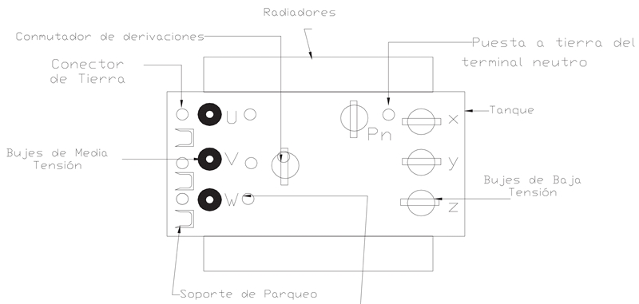
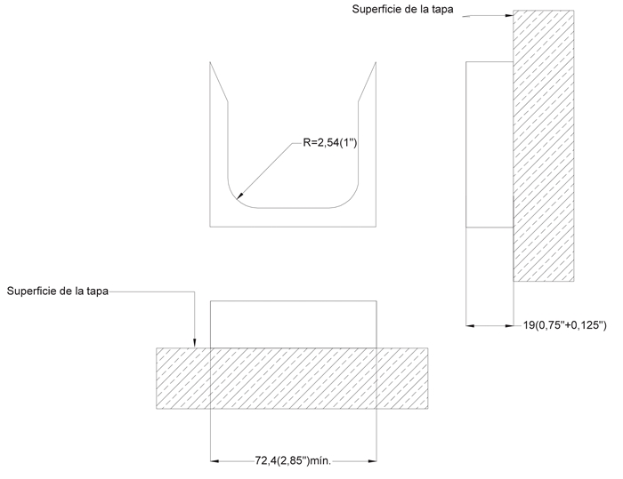

Siempre es más fácil conocer las normas ENEL-CODENSA
Rolex Rolex gold watch, compared with ordinary materials, gold watches are often expensive, but the replica rolex gold watch has the role of swiss replica watches hedging, so that it often becomes the first choice for collectors. The gold watch has value in the world, largely because the omega replica watch brand launched a commemorative limited edition watch or a replica hublot complex movement process or artistic attainments deep watches, mostly preferred gold precious metals such material. These watches tend to have a strong hedging function, therefore, Rolex Rolex gold watch reputation.

ET009 Transformador de distribución trifásico ocasionalmente sumergible,potencia <=500 kVA
Datos adicionales
Número de especificación
ET 009
Fecha de vigencia
06/04/2022
Herramientas adicionales
- Contenido Ocultar
- 1. OBJETO
- 2. ALCANCE
- 3. CONDICIONES DE SERVICIO
- a. Condiciones ambientales
- b. Características eléctricas del sistema:
- 4. SISTEMA DE UNIDADES
- 5. NORMAS DE FABRICACIÓN Y PRUEBAS
- 6. REQUERIMIENTOS TÉCNICOS PARTICULARES
- 6.1 POTENCIA
- 6.2 VALORES DE TENSIÓN , DERIVACIONES Y NIVEL DE AISLAMIENTO
- 6.3 NIVELES DE AISLAMIENTO
- 6.4 ENSAYOS
- 6.4.1 TEMPERATURA DE REFERENCIA
- 6.4.2 ENSAYO DEL DIELÉCTRICO
- 6.5 IMPEDANCIA
- 6.6 GRUPO DE CONEXIÓN
- 6.7 PÉRDIDAS DE TRANSFORMACIÓN
- 6.8 NIVELES DE RUIDO
- 7. CONSTRUCCIÓN
- 7.1 GENERALIDADES
- 7.1.1 ACCESORIOS
- 7.1.2 REQUERIMIENTOS DE LOS ACCESORIOS
- 7.1.2.1 Indicador de Nivel de Aceite
- 7.1.2.2 Medios de Izaje
- 7.1.2.3 Placa de Características
- 7.1.2.4 Conmutador de Derivaciones
- 7.1.2.5 Válvulas para Llenado y Drenaje de Aceite
- 7.2 AISLADORES Y TERMINALES
- 7.2.1 AISLADORES Y TERMINALES DE MEDIA TENSIÓN
- 7.2.2 AISLADORES Y TERMINALES DE BAJA TENSIÓN
- 7.2.3 TERMINAL DEL NEUTRO
- 8. TANQUES
- 8.1 PUESTA A TIERRA DEL TANQUE
- DIMENSIONES
- 9. REQUISITOS DE LAS OFERTAS
- 10. CARACTERÍSTICAS TÉCNICAS GARANTIZADAS
- 10.1 PLANILLA DE PERDIDAS ELÉCTRICAS
1. OBJETO
Este documento tiene por objeto establecer las condiciones técnicas para los transformadores fabricados para operar satisfactoriamente cuando son sumergidos en agua bajo condiciones determinadas de presión y tiempo (máximo 24 horas totalmente sumergido).2. ALCANCE
Esta especificación aplica para todos los transformadores de distribución (potencia <=500 kVA) que sean instalados en el sistema de distribución de CODENSA S.A. ESP.3. CONDICIONES DE SERVICIO
Los transformadores serán instalados en el sistema de distribución de CODENSA S.A. ESP, bajo las siguientes condiciones:a. Condiciones ambientales
| CARACTERÍSTICAS AMBIENTALES | |
| a. Altura sobre el nivel del mar | 2700 m |
| b. Humedad relativa: | 90% |
| c. Temperatura ambiente máxima: | 30 °C |
| d. Temperatura ambiente mínima: | -2 °C |
| e. Temperatura ambiente promedio | 14 °C |
b. Características eléctricas del sistema:
| CARACTERÍSTICAS ELÉCTRICAS | |
| Tensión Nominal primaria | 11400, 13200 V |
| Tensión Nominal secundaria | 208 / 120 V, 380/220 V, 480/ 277 V |
| Frecuencia | 60 Hz |
| Tipo de conexión | Trifásica |
4. SISTEMA DE UNIDADES
En todos los documentos técnicos se deben expresar las cantidades numéricas en unidades del sistema Internacional (S.I.). Si se usan catálogos, folletos o planos, en sistemas diferentes de unidades, deben hacerse las conversiones respectivas.5. NORMAS DE FABRICACIÓN Y PRUEBAS
En caso de discrepancia entre las Normas y este documento, prevalecerá lo aquí establecido. Las normas aplicables son las siguientes:| NORMA | DESCRIPCIÓN | |
| NTC | 317 | Electrotecnica. Transformadores de potencia y distribución. Terminología. |
| NTC | 2501-1 | Electrotecnica. Pasatapas para terminales con tensión de serie 1,2 kV utilizados en transformadores de distribución y potencia menores a 5 MVA. |
| NTC | 4406 | Transformadores trifásicos de distribución tipo ocasionalmente sumergibles, de potencia, menor o igual a 2500 kVA con alta tensión menor o igual que 34,500 conexión estrella aterrizada/ 19920 V y baja tensión menor o igual que 480 V. |
| NTC | 3997 | Transformadores de distribución trifásicos tipo pedestal autorrefirgerados, con compartimientos, para uso con conectores elsatoméricos de alta tensión, aislados separables, para proveer frente muerto (lado de alta tensión). |
| ANSI | C57.12. 24-2000 | Underground-type three-phase distribution transformers, 2500 kVA and smaller; high voltage,34500 GrdY/19920 Volts and below; low voltge, 480 Volts and below- requerements. |
6. REQUERIMIENTOS TÉCNICOS PARTICULARES
6.1 POTENCIA
El transformador debe operar a la potencia nominal continua sin que el incremento de temperatura promedio en los devanados supere los 55°C, ni 70°C de incremento de temperatura en el punto más caliente del conductor. El incremento de temperatura en el nivel superior del aceite no exceda los 55°C. Para cargas mayores a la carga nominal, se debe referir a la guía de cargabilidad ANSI/IEEE C57.91ó GTC 50.Los transformadores objeto de esta norma deben ser aptos para operar continuamente a la potencia nominal, siempre y cuando la temperatura ambiente maxima del encerramiento no sobrepase los 50°C y la temperatura promedio del ambiente del encerramiento no exceda de 40°C para cualquier periodo de 24 horas.
Las potencias nominales requeridas por CODENSA son 30, 45, 75, 112.5, 150, 225, 300, 400, y 500 KVA.
6.2 VALORES DE TENSIÓN , DERIVACIONES Y NIVEL DE AISLAMIENTO
Los valores nominales empleados en el sistema eléctrico de CODENSA son:| Tensión Nominal en M.T. (V) | tensión a plena carga en B.T. (V). | Derivaciones en A.T. |
| 11400 - 13200 | 208/120 | +1X2,5% y –3X2,5% |
| 11400 - 13200 | 480/277 | +1X2,5% y –3X2,5% |
| 11400 - 13200 | 380/220 | +1X2,5% y –3X2,5% |
6.3 NIVELES DE AISLAMIENTO
El nivel básico de aislamiento que deben tener los devanados de M.T. y los terminales de M.T. es 95 kV. Para una tensión de serie de 15kV y el nivel básico de aislamiento que deben tener los devanados de B.T. y los terminales de B.T. debe ser de 30kV para una tensión de serie de 1,2kV.El nivel de ensayo de aislamiento debe estar de acuerdo con lo establecido en la NTC 836 (34kV para MT y 10kV para BT).
6.4 ENSAYOS
De acuerdo con lo indicado en la NTC 380 la clasificación de los ensayos de rutina de tipo eléctrico es:- Medición de la resistencia de los devanados.
- Medición de la relación de transformación y relación de fase.
- Ensayo de tensión aplicada.
- Ensayo de tensión inducida.
- Medición de la tensión de cortocircuito.
- Medición de las pérdidas con carga.
- Medición de las pérdidas y corriente sin carga.
6.4.1 TEMPERATURA DE REFERENCIA
Las pérdidas en carga, la impedancia, la regulación y la eficiencia deben de ser referidas a 85°C de temperatura.6.4.2 ENSAYO DEL DIELÉCTRICO
Los ensayos de tensión aplicada y de tensión inducida se deben realizar de acuerdo con lo indicado en la NTC 837.6.5 IMPEDANCIA
La tensión de cortocircuito expresada en un porcentaje de la tensión nominal y tomada en la posición nominal debe cumplir con los valores indicados en la tabla No. 1| Potencia nominal del transformador (kVA) | Impedancia de cortocircuito referida a 85 °C (%) |
| 30-45 | 3.0 |
| 75 – 112.5 | 3,5 |
| 113 – 500 | 4 |
Tabla No.1 Impedancias de corto circuito
Notas:
- Las potencias nominales han sido separadas para indicar que todo el rango está incluido en esta especificación.
- Los valores indicados en la tabla No. 1 son los valores máximos que pueden tener los transformadores y sobre ellos no aplica tolerancia alguna.
- La tolerancia se aplica sobre el valor declarado, siendo ésta de ± 10 %.
6.6 GRUPO DE CONEXIÓN
El grupo de conexión de los transformadores trifásicos será Dyn5, con el neutro accesible externamente y sólidamente puesto a tierra.6.7 PÉRDIDAS DE TRANSFORMACIÓN
| PÉRDIDAS TÉCNICAS | 30 KVA | 45 KVA | 75 KVA | 112,5 KVA | 150 KVA | 225 KVA | 300 KVA | 500 KVA |
| Perdidas máximas en vacío (Vatios) | 135 | 180 | 265 | 365 | 450 | 615 | 765 | 1090 |
| Perdidas en Carga a 85°C (Vatios) | 515 | 710 | 1090 | 1540 | 1960 | 2890 | 3675 | 5780 |
| Pérdidas máximas totales a 85 º C (Vatios) | 650 | 890 | 1355 | 1905 | 2410 | 3505 | 4440 | 6870 |
6.8 NIVELES DE RUIDO
Deben estar de acuerdo a lo indicado en la tabla 4 de NTC 4406.7. CONSTRUCCIÓN
7.1 GENERALIDADES
Los transformadores deben llevar en la tapa superior los bujes de M.T. tipo “bushing well” (con tornillo interior removible) acoplados a los bujes tipo inserto y que finalmente se adaptaran a los terminales de los cables tipo codo, reconectables generalmente energizados (para cable No. 2 de 15 kV con XLPE al 100%, pantalla metálica en hilos de cobre helicoidal y el diametro sobre el aislamiento de 16,5mm).
Deben proveerse los soportes para bujes de parqueo tal como se indican en la figura 3.
Los tres componentes (bushing well, inserto y codo conector) así como también los soportes para bujes de parqueo deben cumplir con la especificación ANSI IEEE 386.
7.1.1 ACCESORIOS
Los siguientes accesorios deben ser montados sobre la tapa superior de tal manera que se puedan operar desde la parte superior con herramientas de trabajo adecuados:
- Tres bujes de M.T. bushing well acoplados a los bujes tipo inserto de 200A y sus respectivos soportes de parqueo.
- Tres fusibles de respaldo limitadores de corriente “ELSP” tipo OS (Oil sumersible).
- Tres fusibles tipo bayoneta sensor corriente
- Tres portafusibles tipo bayoneta.
- Cuatro bujes para B.T. con espárrago roscado para uso con terminales atornillables y cambiables externamente y conexión de conductores desde 2/0 hasta 500 kcmil
- Cuatro conectores terminales de baja tensión aislados para 4 salidas.
- Placa de características en acero inoxidable.
- Conmutador para regulación de tensión en M.T. para operación sin tensión con accionamiento protegido
- Válvula de alivio de presión especial para equipo sumergible en acero inoxidable.
- Indicador de nivel (para colocar en la tapa definirlo).
- Conector separable aislado (codo premoldeado de 200A)
En caso de ser transfromadores para alumbrado publico deberán llevar interruptor termomagnético para baja tensión sumergido en aceite, seleccionado de acuerdo con la curva de capacidad térmica que puede soportar el transformador y coordinado debidamente con el fusible de expulsión y la máxima corriente de cortocircuito limitada por la impedancia del transformador. El interruptor automático, debe estar previsto con una manija exterior para su operación.
Los siguientes accesorios deben ser instalados en la pared del tanque del transformador:
- Válvula de drenaje de aceite y niple hembra roscado NPT 1” con tapon macho.
- Dispositivos para levantar o izar el transformador.
7.1.2 REQUERIMIENTOS DE LOS ACCESORIOS
Los accesorios deben corresponder a lo especificado a continuación:7.1.2.1 Indicador de Nivel de Aceite
Es posible emplear otro tipo de indicador de nivel siempre y cuando garantice el grado de hermeticidad requerida para tales equipos y nos presente el nivel del aceite respectivo y esté ubicado en la tapa del transformador.
7.1.2.2 Medios de Izaje
Los medios de izaje deben diseñarse para proporcionar un factor de seguridad de 5 ó más. Siendo este factor como la relación entre el esfuerzo último del material usado y el esfuerzo de trabajo.Deben suministrarse cuatro ganchos de izar para levantar el transformador con cuatro eslingas de tal forma que el izaje se efectúe con cuatro fuerzas balanceadas en dirección vertical.
7.1.2.3 Placa de Características
La placa de características debe asegurarse en la parte superior de la tapa, orientada con los terminales de B.T. del transformador y fabricada en acero inoxidable.La placa de características debe indicar en forma clara e indeleble, en español los siguientes datos:
- Norma de fabricación
- Nombre o razón social del fabricante.
- Número de serie.
- Año de fabricación
- Palabra BOG-CUN
- Tipo(ocasionalmente sumergible)
- Número de fases.
- Potencia nominal (kVA)
- Tensiones nominales (V) en número de derivaciones y tensión para cada una.
- Corriente nominal (A).
- Frecuencia en Hz.
- Símbolo del grupo de conexión.
- Tensión de cortocircuito a la corriente nominal(valor medido en porcentaje referido a 85°C).
- Tipo de refrigeración.
- Aumento de temperatura en °C.
- Temperatura ambiente máxima del encerramiento: 50°C
- Ubicación y marcación de los terminales en el tanque.
- Corriente de cortocircuito simétrica (kA)
- Duración del cortocircuito simétrico máximo permisible (s).
- Tipo de liquido aislante.
- Volumen del líquido aislante(l).
- Peso total (Kg).
- Diagrama de conexiones.
- Altura de instalación
- Nivel básico de aislamiento.
- Material del tanque.
- Marcación grupo 4 No PCB.
- Diagrama de fases.
7.1.2.4 Conmutador de Derivaciones
Debe suministrarse un conmutador de derivaciones para operar sin tensión. Cada posición del conmutador y la correspondiente tensión deben ser fácilmente identificables con lo indicado en la placa de características. Todas las posiciones del conmutador deben ser operables.El mecanismo de operación del conmutador de derivaciones debe ser accionado desde el exterior, e indicar claramente la posición de cada toma y debe estar protegido adecuadamente contra inmersión, agentes corrosivos y esfuerzos mecánicos protegido dentro de un tubo roscado con tapon.
El conmutador debe diseñarse con un dispositivo exterior que sobresalga de la tapa superior.
Al lado del dispositivo de maniobras debe colocarse un aviso de “manióbrese sin tensión”.
7.1.2.5 Válvulas para Llenado y Drenaje de Aceite
La válvula para drenaje NPT de 25,4mm(1 pulgada) debe ser adecuada para el uso con aceite mineral. Debe ser provisto de un tapón roscado de calibre 25,4mm rosca cónica(1 pulgada NPT).Tapón para llenado niple hembra roscado NPT 1” con tapón, soldado en la pared del tanque por encima del nivel del aceite.
7.2 AISLADORES Y TERMINALES
El grupo de conexión de los transformadores trifásicos será Dyn5, con el neutro accesible externamente y sólidamente puesto a tierra.7.2.1 AISLADORES Y TERMINALES DE MEDIA TENSIÓN
Los aisladores de M.T. deben ser del tipo “bushing well”(con tornillo removible) acoplados a una pieza intermedia o bujes tipo inserto y se conectan finalmente al sistema de M.T. mediante los conectores aislados tipo codo de 200A. Los tres componentes deben cumplir con la especificación ANSI/IEEE 386.Para elementos de 200A BIL 95 kV, los bushing well no deben ser soldados.
Los aisladores estarán ubicados en la tapa del transformador de acuerdo con lo indicado en la figura 1.
El sistema de fijación debe ser con tornillos exteriores en acero inoxidable soldados a la tapa del tanque
El espigo interno de los bujes tipo “bushing well” que se conecta al buje inserto debe ser intercambiable en terreno sin necesidad de destapar el transformador.
Los bujes inserto deben adaptarse a los bushing well según lo indicado en la norma ANSI/IEEE 386 y son para operar en carga (loadbreak).
Las características eléctricas de los terminales de MT se indican en la tabla No. 2.
| Nivel de tensión (kV) | BIL (KV) | Tensión de ensayo a 60 Hz durante 60 segundos (kV) |
| 15 | 95 | 34 |
(completamente ensamblados)
7.2.2 AISLADORES Y TERMINALES DE BAJA TENSIÓN
Los aisladores de baja tensión son de fijación externa, se aseguran mediante tornillos en acero inoxidable soldados a la tapa del tanque .Los aisladores de baja tensión deben tener terminal externo tipo roscado para conectarles los terminales tipo tornillos aislados.
El terminal de B.T. debe ser en cobre con recubrimiento en estaño.
Las características eléctricas de los aisladores de baja tensión se indican en la tabla No. 3
Tabla No. 3 Características eléctricas de los terminales de B.T.
(completamente ensamblados)
7.2.3 TERMINAL DEL NEUTRO
El neutro de baja tensión debe conectarse a un buje completamente aislado; debe utilizarse una banda de aterrizaje conectada entre el terminal neutro y el dispositivo de puesta a tierra.8. TANQUES
El tanque del transformador será de construcción hermética (que no permita intercambio de gas del interior con el exterior dentro del rango normal incluso en sobrecarga de acuerdo con la GTC 50).Deben ser fabricado en un material resistente a la corrosión como el acero inoxidable austenitico o un material no resistente a la corrosión con un recubrimiento que garantice esta condicion de acuerdo a la NTC 4406 numeral 4.6.6.
La cubierta o tapa puede ser pernada o soldada al tanque, ademas debe contar con una inclinación de 1 a 2 grados para evitar la acumulación de agua.
En la tapa del transformador ocasionalmente sumergible se encuentran la perilla del conmutador de derivaciones del transformador, las conexiones de MT y BT, con posibilidad de instalar accesorios para conexión externa de DPS´s en media y baja tensión.
La vista en planta del transformador debe estar de acuerdo con la figura 1 con el fin de localizar los terminales y los dispositivos de operación

Figura No. 1 Localización de los bujes de M.T y B.T.
Los tornillos y las tuercas en acero inoxidable deben estar adecuadamente colocadas evitando que estos se solden.
Todos los accesorios deben de ser de material resistente a la corrosión.
Los espesores de pared serán tales que, por medio de buenas prácticas de la industria, garanticen superar los ensayos de tipo y rutina, sin deformaciones permanentes y manteniendo su hermeticidad.
El tanque debe soportar una presión interna de 7 psi(48,3 kPa) sin sufrir deformación permanente. El transformador en operación a potencia nominal y temperatura ambiente máximo de 50°C debe soportar una presión resultante máxima de 7 psi sin sufrir deformación permanente. Se deben efectuar ensayos de hermeticidad a una presión mínima de 7 psi, medidos sobre la cabeza estática del líquido, durante un período mínimo de 6 h. Además el tanque debe soportar sin ruptura 12 psi sin fugas o expulsión de cualquier componente del transformador.
8.1 PUESTA A TIERRA DEL TANQUE
Un punto de conexión debe suministrarse cerca de los aisladores de media tensión para aterrizar las pantallas del cable de alimentación.Un punto de conexión de aterrizaje del tanque debe ser de acero inoxidable M12 x 50 con paso 1,75mm, con mordaza en bronce, con arandela, guaza y tuerca. La tuerca debe ser de hierro galvanizado en caliente, todas las piezas no ferrosas deben ser cincadas ó estañados con espesor mínimo de 10mm. El tornillo debe estar soldado y situado en la parte inferior del tanque.
DIMENSIONES
Las dimensiones máximas (incluyendo dimensiones de accesorios) de los transformadores se indican en la tabla No. 4.
Figura No. 2 Dimensiones máximas de los transformadores
Tabla No. 4 Dimensiones Máximas
| Potencia Nominal (KVA) | LARGO mm(in) | ANCHO mm(in) | ALTO mm(in) | Peso Aprox. (kg) |
| 30 | -- | |||
| 45 | 1528(60) | 806(32) | 1113(44) | -- |
| 75 | 1528(60) | 806(32) | 1113(44) | -- |
| 150 | 1600(63) | 965(38) | 1524(60) | 1816 |
| 225 | 1600(63) | 965(38) | 1524((60) | 2180 |
| 300 | 1680(66) | 1067(42) | 1702(67) | 2270 |
| 400 | 1829(72) | 1118(44) | 1702(67) | 2815 |
| 500 | 1829(72) | 1118(44) | 1702(67) | 2815 |

Debe utilizarse una banda de aterrizaje conectada entre el terminal neutro y el dispositivo de puesta a tierra.
9. REQUISITOS DE LAS OFERTAS
La oferta técnica deberá entregarse en copia dura y por lo menos una copia en medio magnético. El oferente deberá incluir con su propuesta la siguiente información:• Planilla de características técnicas garantizadas indicadas en el numeral 10, la cual deberá ser diligenciada completamente, firmada y sellada por el oferente. Esta planilla debe entregarse en formato Excel.
• Catálogos originales, completos y actualizados, que contengan características técnicas principales correspondientes a los bienes cotizados en la planilla de características técnicas garantizadas.
• Protocolos de pruebas de acuerdo con las normas indicadas en el numeral 5 de la presente especificación. En tales protocolos se deberán anotar las fechas de fabricación y de realización de las pruebas, para permitir la verificación de las características técnicas garantizadas. Así mismo las fotocopias de los certificados de laboratorios internacionales cuando las pruebas deban ser hechas fuera del país.
• El oferente adjuntará con su propuesta el certificado de conformidad de producto con noma técnica y con RETIE, expedido por una entidad autorizada por la ONAC. Además deberá presentar el certificado de calidad ISO 9001.
• Los oferentes deberán ofrecer una garantía absoluta de sus productos de por lo menos dos (2) años.
• Información adicional que considere aporta explicación a su diseño (dibujos, detalles, características de operación, dimensiones y pesos de los materiales ofertados).
CODENSA S.A. podrá descartar ofertas que no cumplan con las anteriores disposiciones, sin expresión de causa ni obligación de compensación.
10. CARACTERÍSTICAS TÉCNICAS GARANTIZADAS
10.1 PLANILLA DE PERDIDAS ELÉCTRICAS
| No | CARACTERÍSTICAS GENERALES | SOLICITADO | GARANTIZADO | |
| 1 | Fabricante | |||
| 2 | Referencia de fabricación - tipo. | |||
| 3 | Cumple con los requisitos, valores y procedimientos, aplicables para estos equipos, de acuerdo con lo prescrito en la última revisión de la Especificación de transformadores de distribución convencionales ET – 009. SI/NO. | |||
| 4 | Cumple con los requisitos técnicos específicos indicados en los términos de referencia (tensión a plena carga, conmutador de derivaciones, etc.), SI/NO | |||
| 5 | Incluye los accesorios indicados en la norma NTC 4406 , NTC 3997y/o NTC 1656. SI/NO. | |||
| 6 | Incluye los accesorios adicionales solicitados en la petición SI/NO. | |||
| 7 | El aceite utilizado es NO inhibido, según especificación CODENSA ET 021. SI/NO. | |||
| 8 | El empaque utilizado como sello cumple con lo indicado en la norma NTC 1759. SI/NO | |||
| 8.1 | Número de horas continuas de operación del transformador totalmente sumergido | |||
| 9 | Esta de acuerdo y puede realizar todas las pruebas solicitadas. SI/NO | |||
| CARACTERISTICAS DEL NUCLEO | ||||
| 10 | Inducción de trabajo. (Wb/m2) | |||
| A | Tipo (enrollado , laminado) | |||
| B | Método de fijación | |||
| CARACTERISTICAS DEL TANQUE | ||||
| 11 | Material | |||
| 12 | Presión interna máxima soportada a nivel del mar (kg/cm2) | |||
| 13 | Dimensiones del tanque LxAxA (largo por ancho por alto), mm. | |||
| 14 | Método de fijación de la tapa al tanque. | |||
| 15 | Dimensiones LxAxA(largox Ancho x Alto) del transformador totalmente terminado. mm. | |||
| PESO | ||||
| 16 | Neto del transformador con aceite | |||
| 17 | Devanados | |||
| 18 | Parte activa | |||
| CARACTERISTICAS ELECTRICAS | ||||
| 19 | Potencia (kVA) continua nominal a 2700 m y 30 °C ambiente. | |||
| 20 | Tensiones (V) a potencia nominal en la derivación principal. | |||
| A | A.T. | |||
| B | B.T. | |||
| 21 | Grupo de conexión | |||
| 22 | Nivel máximo de sonido audible (db), en condiciones nominales. | |||
| 23 | Capacidad del neutro en porcentaje de la corriente nominal. | |||
| 24 | Corriente de corto circuito que pueden soportar los devanados | |||
| A | Valor simétrico en número de veces de la corriente nominal. | AT | ||
| BT | ||||
| B | Tiempo de duración en segundos | |||
| 25 | Nivel de aislamiento al impulso básico (BIL) en los devanados (kV). (2700 m) | |||
| A | A.T. | |||
| B | B.T. | |||
| 26 | Nivel de aislamiento al impulso Básico (BIL) en los pasatapas (kV). (2700 m) | |||
| A | A.T. | |||
| B | B.T | |||
| C | Neutro | |||
| 27 | Eficiencia (%) a potencia y tensión nominal | |||
| A | F.P 0.8 | |||
| B | F.P 0.9 | |||
| 28 | Regulación (%) de tensión a F.P 0.9 | |||
| A | Al 75 % de la potencia nominal. | |||
| B | Al 100 % de la potencia nominal. | |||
| C | Al 150 % de la potencia nominal. | |||
| 29 | Pérdidas sin carga al 110 % de la tensión nominal. | |||
| 30 | Corriente sin carga en porcentaje de la corriente nominal al 110 % de la tensión nominal. | |||
| 31 | Perdidas con carga referidas a 85 °C al 150 % de la potencia nominal | |||
| 32 | Capacidad de sobrecarga a 20 °C, con carga precedente de 90 % a 1000 msnm. | |||
| A | Durante una hora. | |||
| B | Durante dos horas. | |||
| C | Durante cuatro horas. | |||
| D | Continua | |||
| 33 | Elevación de temperatura en los devanados sobre la temperatura ambiente. | |||
| A | Promedio | |||
| B | Máxima | |||
| 34 | Elevación de temperatura máxima en el aceite sobre la temperatura ambiente. | |||
| 35 | Periodo de garantía de fabrica ofrecido en meses: mínimo 24 meses. | |||
| 36 | Indique cualquier desviación a las especificaciones técnicas solicitadas y/o a las condiciones generales de la presente solicitud | |||
| RESULTADO DE EVALUACIÓN TÉCNICA | ||||
| 37 | Certificación de sistema de calidad | Entidad acreditadora | ||
| Número de acreditación | ||||
| Fecha de aprobación (día/mes/año) | ||||
| Vigencia | ||||
| Adjunta el certificado (Si/No) | ||||
| 38 | Certificación con normas técnicas | Entidad acreditadora | ||
| Número de acreditación | ||||
| Fecha de aprobación (Día/Mes/Año) | ||||
| Vigencia | ||||
| Norma técnica con la cual se certifica | ||||
| Adjunta el certificado (Si/No) | ||||
| 39 | Certificación con RETIE | Entidad acreditadora | ||
| Número de acreditación | ||||
| Fecha de aprobación (día/mes/año) | ||||
| Vigencia | ||||
| Adjunta el certificado (Si/No) | ||||
| RESULTADO DE EVALUACIÓN REGULATORIA | ||||
| 40 | Observaciones | |||